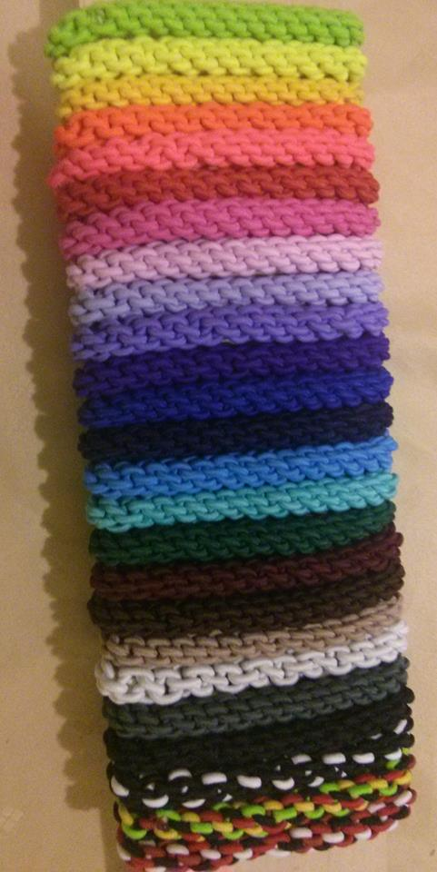
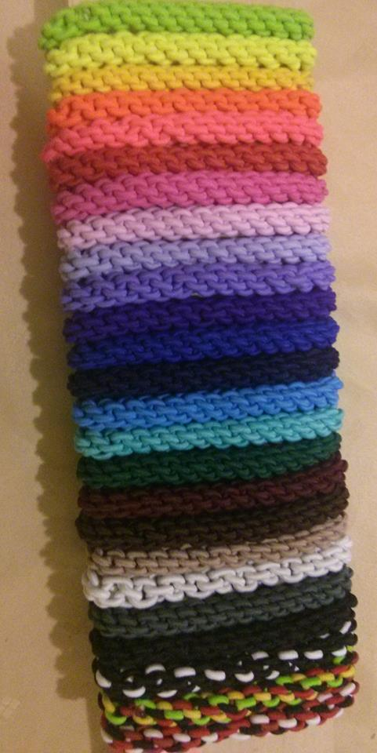

Je libo...
- Rasta copánky
- Francouzské copánky
- Úpravy dreadů
-
Volné termíny
- Henna
- Karetky
-
- Fotogalerie
- Ceník
- Kontakt
- Vzkazy
- Odkazy
Evanii - rasta copánky v Brně
Ceník
Zde najdete orientační ceny účesů. V případě zájmu mi napište email a na všem se dohodneme konkrétně, co člověk, to jiný požadavek, takže cena může být podle toho upravena.
Rasta copánky pleteme ve dvou, takže to zvládneme průměrně za 3-4 hodiny.
Rasta copánky
V ceně copánků není započítán materiál. Materiál na napletení lze objednat buď přímo přeze mě (po uhrazení zálohy), nebo si jej zákaznice či zákazník objedná sám zde. Kanekalon na celou hlavu obvykle vyjde od 550 do 800 Kč dle zvolené barvy a typu (pro open rasta copánky může materiál vyjít až na 2000 Kč). Všechny dotazy ohledně typu, barvy a množství kanekalonu s Vámi ráda prokonzultuji :-) Více informací o materiálech si můžete přečíst zde.
2500,- |
130-200 copánků, v délce max. 70 cm pletených z kanekalonu (v ceně není kanekalon), základní varianta |
|
|
|
2500 - 4000,- |
nad 200 ks nebo z kanekalonu xxl, podle počtu copánků |
|
|
|
od 1500,- |
kratší copánky do 100 ks, tlustší, open rasta copánky s delšími volnými konci...
|
|
|
|
20-50,- |
1 copánek (včetně materiálu - dle délky) |
|
|
|
500 - 1500,- |
rozpletení rasta copánků (rozplétáme ve dvou, cena záleží na délce nošení a délce vlasů) |
Francouzské copánky
400,- |
čelenka = copánky do půl hlavy (od 15 do 25 copánků - více = cena dohodou) |
|
|
|
600,- |
celá hlava (od 15 do 25 copánků - více = cena dohodou)
|
|
|
|
250,- |
2 tlusté copy (tzv. boxerské), cena včetně materiálu
|
|
|
|
1200 - 2500,- |
Kombinace francouzských a rasta copánků. (V ceně není materiál - ten vyjde na cca 400-800, lze plést i bez přípletu jen z vlastních vlasů, zde jsou ceny opravdu hodně individuální v závislosti na konečném počtu, délce a tloušťce copánků.) |
|
|
|
50 - 200,- |
přidání mého kanekalonu do fr. copánků (bude přičteno dle množství spotřebovaného materiálu k ceně copánků) |
|
|
|
30 - 80,- |
1 francouzský copánek (včetně případného kanekalonu, cena dle množství materiálu) |
Dready a pseudodready
250,- |
/hod. opravy dreadů (opravy trvají v průměru 1-3 hodiny) |
400 - 600,- |
Připletení donesených pseudodreadů (cena včetně gumiček) |
50 - 100,- |
1 dread (cena dle délky a použitého materiálu) |
Celé hlavy dreadů v současnosti nepletu
Gumičky
K copánkům si můžete zakoupit krásné barevné, ručně vyráběné gumičky (z dílny Míši z Rasta4U). Gumičky jsou k mání za 40 Kč. Informujte se u mě na aktuální stav barev. Dále nabízím mnou šité šátkové čelenky na copánky. Akruální vzory pošlu na vyžádání :).


 


{kind=link}